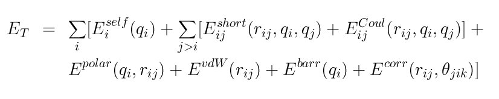

pair_style comb command¶
pair_style comb/omp command¶
pair_style comb3 command¶
Syntax¶
pair_style comb
pair_style comb3 keyword
keyword = polar polar value = polar_on or polar_off = whether or not to include atomic polarization
Examples¶
pair_style comb
pair_coeff * * ../potentials/ffield.comb Si
pair_coeff * * ../potentials/ffield.comb Hf Si O
pair_style comb3 polar_off
pair_coeff * * ../potentials/ffield.comb3 O Cu N C O
Description¶
Style comb computes the second-generation variable charge COMB (Charge-Optimized Many-Body) potential. Style comb3 computes the third-generation COMB potential. These COMB potentials are described in (COMB) and (COMB3). Briefly, the total energy E<sub>T</sub> of a system of atoms is given by
where E<sub>i</sub><sup>self</sup> is the self-energy of atom i (including atomic ionization energies and electron affinities), E<sub>ij</sub><sup>short</sup> is the bond-order potential between atoms i and j, E<sub>ij</sub><sup>Coul</sup> is the Coulomb interactions, E<sup>polar</sup> is the polarization term for organic systems (style comb3 only), E<sup>vdW</sup> is the van der Waals energy (style comb3 only), E<sup>barr</sup> is a charge barrier function, and E<sup>corr</sup> are angular correction terms.
The COMB potentials (styles comb and comb3) are variable charge potentials. The equilibrium charge on each atom is calculated by the electronegativity equalization (QEq) method. See Rick for further details. This is implemented by the fix qeq/comb command, which should normally be specified in the input script when running a model with the COMB potential. The fix qeq/comb command has options that determine how often charge equilibration is performed, its convergence criterion, and which atoms are included in the calculation.
Only a single pair_coeff command is used with the comb and comb3 styles which specifies the COMB potential file with parameters for all needed elements. These are mapped to LAMMPS atom types by specifying N additional arguments after the potential file in the pair_coeff command, where N is the number of LAMMPS atom types.
For example, if your LAMMPS simulation of a Si/SiO<sub>2</sub>/ HfO<sub>2</sub> interface has 4 atom types, and you want the 1st and last to be Si, the 2nd to be Hf, and the 3rd to be O, and you would use the following pair_coeff command:
pair_coeff * * ../potentials/ffield.comb Si Hf O Si
The first two arguments must be * * so as to span all LAMMPS atom types. The first and last Si arguments map LAMMPS atom types 1 and 4 to the Si element in the ffield.comb file. The second Hf argument maps LAMMPS atom type 2 to the Hf element, and the third O argument maps LAMMPS atom type 3 to the O element in the potential file. If a mapping value is specified as NULL, the mapping is not performed. This can be used when a comb potential is used as part of the hybrid pair style. The NULL values are placeholders for atom types that will be used with other potentials.
For style comb, the provided potential file ffield.comb contains all currently-available 2nd generation COMB parameterizations: for Si, Cu, Hf, Ti, O, their oxides and Zr, Zn and U metals. For style comb3, the potential file ffield.comb3 contains all currently-available 3rd generation COMB paramterizations: O, Cu, N, C, H, Ti, Zn and Zr. The status of the optimization of the compounds, for example Cu<sub>2</sub>O, TiN and hydrocarbons, are given in the following table:

For style comb3, in addition to ffield.comb3, a special parameter file, lib.comb3, that is exclusively used for C/O/H systems, will be automatically loaded if carbon atom is detected in LAMMPS input structure. This file must be in your working directory or in the directory pointed to by the environment variable LAMMPS_POTENTIALS, as described on the pair_coeff command doc page.
Keyword polar indicates whether the force field includes the atomic polarization. Since the equilibration of the polarization has not yet been implemented, it can only set polar_off at present.
Note
You can not use potential file ffield.comb with style comb3, nor file ffield.comb3 with style comb.
Styles with a cuda, gpu, intel, kk, omp, or opt suffix are functionally the same as the corresponding style without the suffix. They have been optimized to run faster, depending on your available hardware, as discussed in Section_accelerate of the manual. The accelerated styles take the same arguments and should produce the same results, except for round-off and precision issues.
These accelerated styles are part of the USER-CUDA, GPU, USER-INTEL, KOKKOS, USER-OMP and OPT packages, respectively. They are only enabled if LAMMPS was built with those packages. See the Making LAMMPS section for more info.
You can specify the accelerated styles explicitly in your input script by including their suffix, or you can use the -suffix command-line switch when you invoke LAMMPS, or you can use the suffix command in your input script.
See Section_accelerate of the manual for more instructions on how to use the accelerated styles effectively.
Mixing, shift, table, tail correction, restart, rRESPA info:
For atom type pairs I,J and I != J, where types I and J correspond to two different element types, mixing is performed by LAMMPS as described above from values in the potential file.
These pair styles does not support the pair_modify shift, table, and tail options.
These pair styles do not write its information to binary restart files, since it is stored in potential files. Thus, you need to re-specify the pair_style, pair_coeff, and fix qeq/comb commands in an input script that reads a restart file.
These pair styles can only be used via the pair keyword of the run_style respa command. It does not support the inner, middle, outer keywords.
Restrictions¶
These pair styles are part of the MANYBODY package. It is only enabled if LAMMPS was built with that package (which it is by default). See the Making LAMMPS section for more info.
These pair styles requires the newton setting to be “on” for pair interactions.
The COMB potentials in the ffield.comb and ffield.comb3 files provided with LAMMPS (see the potentials directory) are parameterized for metal units. You can use the COMB potential with any LAMMPS units, but you would need to create your own COMB potential file with coefficients listed in the appropriate units if your simulation doesn’t use “metal” units.